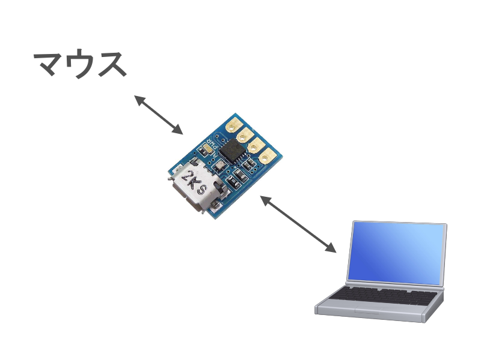
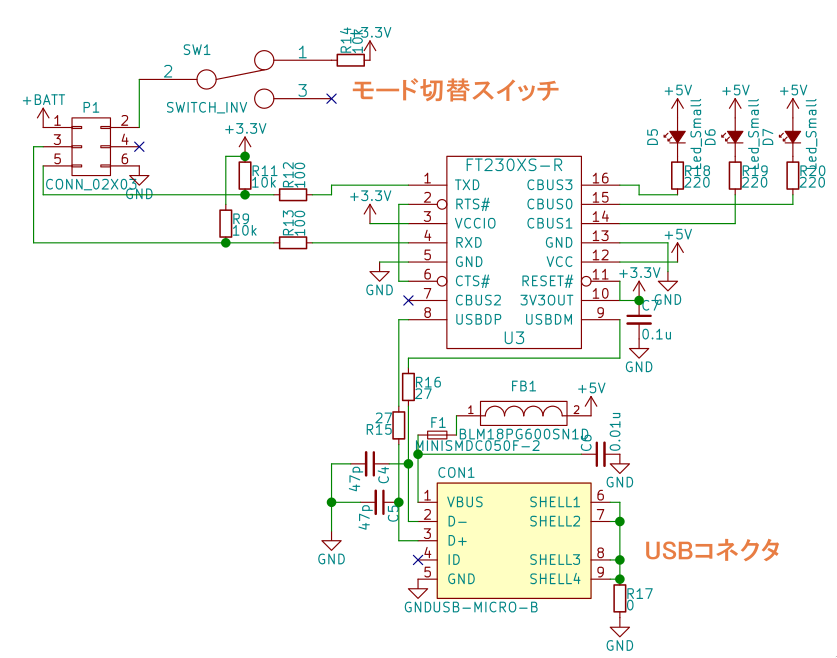

はじめに
この記事はtaniho Advent Calendar 2017の3日目の記事です．
今日は「鵤」専用の書き込み基板を作った話をします．今日の記事は箸休めということで(早い)，ぱぱっとまとめますよ．
「USB-UART変換基板を作って，UARTからマイコンの書き込みを行うまで」について，僕がやったことを書きます．
なぜ書き込み基板を自作するのか
書き込み基板を自作しない場合，市販のUSB-UART変換基板を使うことになります．イメージ図はこんな感じです．

でもこれ，ちょっと微妙ですよね．
- モード切替スイッチを搭載しにくい
- CB0端子で遊びにくい
- 下手したらFT234Xが壊れる(よく壊す人がいる)
- マウスと接続するコネクタの形状が限られる
ということで，書き込み基板を自作することにしました．
……とは言っても，少し楽をします．秋月で販売されているFT234Xのモジュールは回路図が公開されているので，パクれるところはパクっちゃいましょう．
超小型ＵＳＢシリアル変換モジュール: 半導体 秋月電子通商 電子部品 ネット通販
ふむふむ，リセッタブルヒューズと，USBの信号線にフィルタが必要，と．ではここにオリジナル要素を加えていきましょう．
書き込み基板を作った
というわけで回路図です．

いくつかポイントがあります．
- 基板上にマイコンのモード切替スイッチを搭載
- UARTの信号線に抵抗を接続し，逆流を防止
- UARTの信号線にプルアップ抵抗を接続
- リセッタブルヒューズの定格を500mAに変更
- Rx信号が来た時にCBUS0の赤LEDを点滅
- Tx信号が来た時にCBUS0の青LEDを点滅
上記2つのおかげで，UART通信が出来ない場合のデバッグが捗った - USBポートがスリープ状態に入った場合CBUS3を点灯させる
スリープ状態では認識するのに書き込めないという現象が発生するので，これは意外と便利
という感じです．
基本的にFT230Xのデータシートを見ながらこの回路を作りました．そんなに複雑でもないので，余力の有りそうな人は作ってみてはいかがでしょうか．
完成品はこちらです(まぶしい)．

実はこの回路には1セルのリポ充電基板が載っています．これについては明日の記事で書こうと思います．
まとめ
ということで，書き込み基板は気楽に作れますというお話でした．
明日のtaniho Advent Calendar 2017は「1セル充電基板を自作した話」について書こうと思っています．